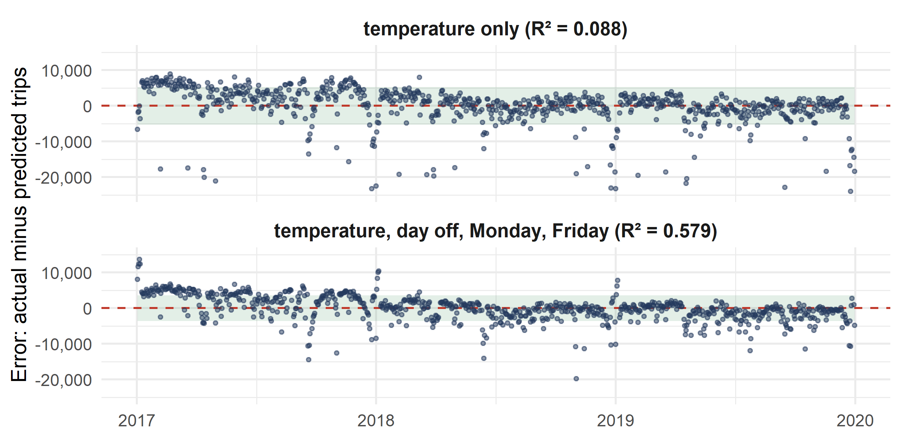
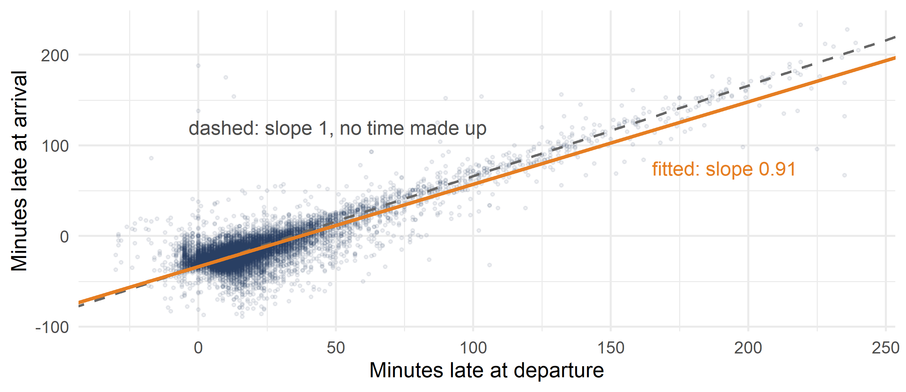
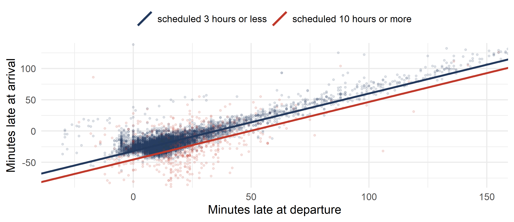

Business Forecasting
Since W07, one regressor has forecast the daily trips:
\[\widehat{\text{trips}} = 16{,}893 + 723.6 \times \text{temp}, \qquad R^2 = 0.088\]
Temperature explains 8.8% of the day-to-day movement in trips. The fleet manager needs a better forecast.
What else moves the number of trips on a given day? Write down your guesses. For each one: can we measure it, and which way should it push trips?
Take two guesses: days off and Fridays.
The regression to write:
\[\text{trips}_i = \beta_0 + \cssId{mt-g1}{\beta_1}\,\text{temp}_i + \cssId{mt-g2}{\beta_2}\,\text{dayoff}_i + \cssId{mt-g3}{\beta_3}\,\text{friday}_i + u_i\]
Each \(\beta\) is the change in trips when only its own variable changes and the others are held fixed. OLS finds all four numbers at once.
Tick the regressors the class proposed. The regression to estimate appears first; then show the estimates.
bikes holds the 781 weekdays of W07–W09: bikes$trips, bikes$temp, bikes$dayoff (1 on a holiday or during the Christmas break) and bikes$friday (1 on Fridays).
How much better does the forecast get with days off and Fridays? How many trips should the fleet expect on a working Friday at 20 °C?
bikes$trips on bikes$temp, bikes$dayoff and bikes$friday.dayoff and the slope on friday.predict(reg, data.frame(temp = 20, dayoff = 0, friday = 1)).
\(R^2\) rises from 0.088 to 0.569 and the typical miss falls from 5,302 to 3,651 trips. A day off has about 15,860 fewer trips than a working day at the same temperature; a Friday about 1,380 fewer than another weekday. The forecast for a working Friday at 20 °C is about 30,295 trips.
| Regressors | R² | adjusted R² | Typical miss (trips) |
|---|---|---|---|
| temp | 0.088 | 0.087 | 5,302 |
| temp + dayoff | 0.559 | 0.558 | 3,690 |
| temp + dayoff + friday | 0.569 | 0.567 | 3,651 |
| temp + dayoff + monday + friday | 0.579 | 0.577 | 3,609 |
| temp + dayoff + monday + friday + pm25 | 0.579 | 0.577 | 3,611 |

The same steps work for any business question: name the outcome, list what moves it, write the regression, estimate it, read each slope with the others held fixed.
| Business question | Data |
|---|---|
| What is an extra bedroom worth? | 88 house sales |
| How much is a year of education worth? Is there a gender gap? | 526 workers |
| Do fast-food chains charge more for a soda in richer neighbourhoods? | 401 restaurants |
| What does a home run earn a baseball player? | 353 players |
| Does a CEO’s pay follow the firm’s results? | 209 CEOs |
All five come from the wooldridge package: hprice1, wage1, discrim, mlb1, ceosal1.
\[\text{price}_i = \beta_0 + \beta_1\,\text{bdrms}_i + \beta_2\,\text{sqrft}_i + \beta_3\,\text{lotsize}_i + \beta_4\,\text{colonial}_i + u_i\]
\(\beta_1\) is what a bedroom adds for a house of the same size, lot and style. Is that different from comparing houses with more and fewer bedrooms?
\[\text{wage}_i = \beta_0 + \beta_1\,\text{educ}_i + \beta_2\,\text{exper}_i + \beta_3\,\text{tenure}_i + \beta_4\,\text{female}_i + u_i\]
\(\beta_4\) is the gap between a woman and a man with the same education, experience and tenure: the part of the pay gap these three cannot explain.
\[\text{psoda}_i = \beta_0 + \beta_1\,\text{income}_i + \beta_2\,\text{prppov}_i + \beta_3\,\text{nstores}_i + \beta_4\,\text{BK}_i + \beta_5\,\text{KFC}_i + u_i\]
\(\beta_1\) asks whether a restaurant charges more where incomes are higher, comparing restaurants of the same chain facing the same competition.
\[\text{salary}_i = \beta_0 + \beta_1\,\text{years}_i + \beta_2\,\text{gamesyr}_i + \beta_3\,\text{bavg}_i + \beta_4\,\text{hrunsyr}_i + \beta_5\,\text{rbisyr}_i + u_i\]
\(\beta_4\) is what one more home run a year is worth for a player with the same experience and the same other statistics.
\[\text{salary}_i = \beta_0 + \beta_1\,\text{roe}_i + \beta_2\,\text{sales}_i + \beta_3\,\text{ros}_i + u_i\]
\(\beta_1\) asks whether a better-run firm pays its CEO more, comparing firms of the same size.
Pick a question, tick the regressors, and compare the slopes and \(R^2\) across models.
houses holds 88 house sales from the wooldridge package (hprice1):
houses$price — sale price, thousands of dollarshouses$bdrms — number of bedroomshouses$sqrft — size of the house, square feethouses$price on houses$bdrms. How much is one more bedroom worth?houses$price on houses$bdrms and houses$sqrft. How much is one more bedroom worth now, for a house of the same size?houses$bdrms and houses$sqrft. Why did the bedroom slope fall?A second regressor goes in with a plus sign: lm(y ~ x1 + x2, data = df).
Alone, one more bedroom goes with 62.0 thousand dollars more. For a house of the same size, it adds only 15.2 thousand, and that is not significant. The correlation is 0.53: houses with more bedrooms are bigger. Alone, the bedroom slope took the credit for the size.
| Model | Bedroom slope | Size slope | R² |
|---|---|---|---|
| price on bedrooms | 62.0 | 0.258 | |
| price on bedrooms and size | 15.2 | 0.128 | 0.632 |
The rest of this week asks the same question of Mexican data from October 2025: how late will a flight land, once the other causes are held fixed?
You plan the day for an airline at Mexico City airport (AICM). A flight from Monterrey left 40 minutes late. The gate, the ground crew and the passengers with a connection all need one number: how many minutes late will it land?
What moves the arrival delay? Write down your guesses. For each one: can we measure it, and which way should it push the delay?
Each cause needs its own number, measured with the others held fixed.
flights holds 11,887 flights that landed at Mexico City airport (AICM) in October 2025, from 111 airports. One row is one flight.
| Column | What it is |
|---|---|
arr_delay |
minutes late at arrival (negative = early) |
dep_delay |
minutes late at departure (negative = early) |
sched_time |
scheduled flight time, minutes |
origin, code, country, intl |
where the flight comes from; intl is 1 for a flight from outside Mexico |
airline |
the airline |
date, weekday, hour |
day and hour of the scheduled arrival |
rain, wind, temp |
weather at AICM in that hour: rain (mm), wind (km/h), temperature (°C) |
Schedules include slack, so most flights land before the scheduled time: only 14% land late.
Sources: arrival records of a public flight tracker; weather from the Open-Meteo historical archive. 359 records with extreme or impossible times are left out.
One regressor first: how much of a late departure is still there at landing?
How many minutes late does a flight land for each minute it leaves late? How early does a flight land if it leaves on time?
flights$arr_delay on flights$dep_delay.\(\widehat{\text{arr_delay}} = -33.48 + 0.910 \times \text{dep_delay}\). Each minute late at departure adds 0.91 minutes at arrival: the crew makes up about 0.09 of each lost minute. A flight that leaves on time lands about 33 minutes before its scheduled arrival: that is the slack in the schedule. The departure delay explains 75.5% of the variation in arrival delays.

Two causes in one model, and what “held fixed” means.
A long flight has more time in the air, and more slack in its schedule, to make up a late departure.
\[\text{arr_delay}_i = \cssId{mt-b0}{\beta_0} + \cssId{mt-b1}{\beta_1}\,\text{dep_delay}_i + \cssId{mt-b2}{\beta_2}\,\text{sched_time}_i + \cssId{mt-u}{u_i}\]
sched_time runs from 40 minutes to almost 16 hours. From Monterrey it is about 100 minutes; from Madrid about 720.For two flights that left equally late, does the one with the longer schedule land earlier? By how many minutes per hour of schedule?
flights$arr_delay on flights$dep_delay and flights$sched_time.sched_time slope to one extra hour of scheduled flight.dep_delay slope move from Exercise 3? How much did \(R^2\) rise?A second regressor goes in with a plus sign: lm(y ~ x1 + x2, data = df). One hour is 60 minutes.
\(\widehat{\text{arr_delay}} = -29.60 + 0.922 \times \text{dep_delay} -0.0217 \times \text{sched_time}\).
For flights with the same scheduled time, each minute late at departure adds 0.92 minutes at arrival. For flights that left equally late, each extra hour in the schedule takes 1.30 minutes off the arrival delay. A 720-minute flight from Madrid lands about 13.5 minutes earlier than a 100-minute flight from Monterrey that left just as late.
The departure slope barely moved: 0.910 to 0.922. \(R^2\) rose from 0.755 to 0.769.

dayoff for Ecobici, works the same way with only two values: it moves the whole line up or down.Two flights leave 40 minutes late: one from Monterrey, scheduled for 100 minutes, and one from Madrid, scheduled for 720 minutes. The gate team needs the expected arrival delay of each.
flights$arr_delay on flights$dep_delay and flights$sched_time.predict().Both flights fit in one data frame: data.frame(dep_delay = c(40, 40), sched_time = c(100, 720)).
The Monterrey flight should land about 5.1 minutes late; the Madrid flight about 8.4 minutes early.
Adding the scheduled time barely moved the departure slope. When does a new regressor move one?
A schedule planner looks at the scheduled time only: do longer flights land earlier?
Predict before you fit: what happens to the sched_time slope once the departure delay is held fixed?
flights$arr_delay on flights$sched_time alone.sched_time slope of Exercise 4, where flights$dep_delay is held fixed.flights$sched_time and flights$dep_delay.sched_time slope move? What does it mean for the planner?Alone, each extra scheduled hour takes 0.42 minutes off the arrival delay. With the departure delay held fixed, it takes 1.30: three times as much.
The correlation is 0.09: long flights leave a little later, and a late departure moves the arrival almost minute for minute. Alone, the later departures of long flights hide most of their slack. A planner who looks at the scheduled time alone sees much less slack than long flights really carry.
| New regressor | Correlation with sched_time | Moves the arrival delay? | sched_time slope |
|---|---|---|---|
| rain at AICM | 0.01 | no: -0.25 minutes per mm, not significant | -0.0069 → -0.0069 |
| departure delay | 0.09 | yes: 0.92 minutes per minute | -0.0069 → -0.0217 |
A slope moves only when the new regressor does both: it moves the outcome, and it moves with the old regressor. Leaving such a variable out is omitted-variable bias.
A small correlation is enough when the left-out cause is strong: the departure delay moves the arrival almost minute for minute.
The same rule as W07, the smallest sum of squared residuals, written for many regressors.
\[SSE(b_0, b_1, b_2) = \sum_{i=1}^{n} \left( y_i - b_0 - b_1 x_{i1} - b_2 x_{i2} \right)^2\]
\[\underbrace{\begin{bmatrix} y_1 \\ y_2 \\ \vdots \\ y_n \end{bmatrix}}_{\mathbf{y}:\ n \times 1} = \underbrace{\begin{bmatrix} 1 & x_{11} & \cdots & x_{1k} \\ 1 & x_{21} & \cdots & x_{2k} \\ \vdots & \vdots & & \vdots \\ 1 & x_{n1} & \cdots & x_{nk} \end{bmatrix}}_{\cssId{mt-xmat}{\mathbf{X}}:\ n \times (k+1)} \underbrace{\begin{bmatrix} \beta_0 \\ \beta_1 \\ \vdots \\ \beta_k \end{bmatrix}}_{\boldsymbol{\beta}:\ (k+1) \times 1} + \underbrace{\begin{bmatrix} u_1 \\ u_2 \\ \vdots \\ u_n \end{bmatrix}}_{\mathbf{u}:\ n \times 1}\]
The OLS estimator, on your formula sheet:
\[\hat{\boldsymbol{\beta}} = \cssId{mt-xtxinv}{(\mathbf{X}^\top \mathbf{X})^{-1}} \cssId{mt-xty}{\mathbf{X}^\top \mathbf{y}}\]
lm() does this for you. A version with four flights, by hand, is in the appendix.
A colleague adds the scheduled time in hours, next to the scheduled time in minutes. What happens if both go into the same regression?
flights$sched_hours, the scheduled time in hours: flights$sched_time / 60.flights$arr_delay on flights$dep_delay, flights$sched_time and flights$sched_hours. What does summary() print for sched_hours? Why?The row for sched_hours shows NA: “1 not defined because of singularities”. sched_hours is sched_time times a fixed number, \(1/60\): an exact copy, so \(\mathbf{X}\) is not full rank. R keeps the first column and drops the copy.
Near-copies are allowed, but they make each slope hard to pin down.
Back to Ecobici. bikes$temp_yday is yesterday’s temperature. Riders may decide on today’s weather, or on what they remember from yesterday.
Today’s and yesterday’s temperature move together. What happens to the temperature slope, and to its standard error, when both go into the regression?
bikes$trips on bikes$temp and bikes$dayoff.bikes$temp_yday.temp and its standard error in the two regressions. What happened to \(R^2\)?bikes$temp and bikes$temp_yday. The first day has no yesterday, so use use = "complete.obs".The temp slope moves from 395 to 525 trips per degree, and its standard error from 59 to 90. Yesterday’s slope is -170: the wrong sign, and not significant at 5%. \(R^2\) barely moves: 0.559 to 0.562. The correlation is 0.76.
| Model | temp slope | SE of temp slope | R² |
|---|---|---|---|
| trips on temp and dayoff | 395 | 59 | 0.559 |
| trips on temp, temp_yday and dayoff | 525 | 90 | 0.562 |
For a forecast, collinearity costs little. For saying which cause matters, it costs a lot.
More regressors always fit the sample at least as well. Is the gain worth it?
One route only: the 682 flights from Guadalajara, all scheduled for about 90 minutes.
Once the departure delay is known, does the weather at AICM help forecast the arrival delay?
gdl <- flights[flights$code == "GDL", ]. Regress gdl$arr_delay on gdl$dep_delay. Note the \(R^2\) and the adjusted \(R^2\).gdl$rain. Note both again. Is rain significant at 5%?rain with gdl$wind. Note both again.| Regressors | \(R^2\) | adjusted \(R^2\) | weather \(T\) |
|---|---|---|---|
| dep_delay | 0.8764 | 0.8762 | |
| dep_delay + rain | 0.8764 | 0.8761 | 0.12 |
| dep_delay + wind | 0.8768 | 0.8765 | -1.49 |
\(R^2\) never falls: with rain it rises only in the fifth decimal. The adjusted \(R^2\) falls with rain and rises with wind. Neither is significant at 5%: once the departure delay is known, the weather at AICM adds almost nothing.
\[R^2 = 1 - \frac{SSE}{SST} \qquad\qquad \bar{R}^2 = 1 - \frac{\cssId{mt-sseadj}{SSE/(n-k-1)}}{\cssId{mt-sstadj}{SST/(n-1)}}\]
For the operations team: the departure delay carries the forecast, and a long schedule absorbs part of it. The weather at the airport adds almost nothing once the departure delay is known.
Do some airlines make up more time than others? That needs a regressor with several categories: week 11.
Give the manager the expected arrival delay of flights that leave 0, 30 and 60 minutes late, from Monterrey (100 scheduled minutes) and from Madrid (720), with one picture and one sentence.
flights$arr_delay on flights$dep_delay and flights$sched_time.predict().flights$arr_delay against flights$dep_delay.data.frame(dep_delay = c(0, 30, 60, 0, 30, 60), sched_time = c(100, 100, 100, 720, 720, 720)) holds the six cases.
From Monterrey: about -31.8, -4.1, 23.5 minutes. From Madrid: about -45.2, -17.6, 10.0 minutes (negative = early).
For the manager: a late departure carries almost minute for minute into the arrival (0.92 minutes per minute); a long schedule absorbs about 1.3 minutes per hour of flight; a Monterrey flight that leaves an hour late should still land about 24 minutes late.
predict().Next week: regressors with several categories, such as the airline, and interactions, with PROFECO shelf prices: whether small local stores price to their neighbourhood, and what the January 2026 tax did to drink prices.
Weekly exercise set: W10_exercises.pdf, with solutions in W10_solutions.pdf.
You can already solve exercises 2, 3 and 25, and most of 4, 5 and 6.
Not in these slides: 1 and 7(c) use regressors with several categories (week 11); 4(f), 5(i) and 6(b) use intervals for a coefficient or a forecast (week 12); 7(a)–(b) use a squared regressor, which this course does not cover.
Suggested before the next class, closest to the exam:
| Exercise | Topic | How |
|---|---|---|
| 2 | Grades on two GRE scores and a 0/1 regressor (metricsgrades) |
R with the data |
| 3 | Cigarette tax and price move together (cigdata) |
R with the data |
| 25 | Food spending on income and household size (ENIGH) | R with the data |
| 5 (a)–(h) | Vote shares on four district traits (congress) |
R with the data |
Problems from this week’s set. ← Back to the summary · ← Back to Practice for this week
[P3 #2]
metricsgrades holds 68 students of a graduate econometrics course, from the probstats4econ package.
metricsgrades$total — final course grade, out of 100metricsgrades$gre_quant, metricsgrades$gre_verbal — GRE scores, out of 170metricsgrades$domestic — 1 if a US student, 0 otherwiseCompute the correlation matrix of the four variables. Which one has the largest correlation, in magnitude, with total?
Regress total on the other three variables.
Interpret the slope on gre_quant.
Predict the grade of a non-domestic student with 160 in quant and 150 in verbal.
What is the estimated standard deviation of the errors?
Test \(H_0: \beta_{\text{domestic}} = 0\) against \(H_A: \beta_{\text{domestic}} \neq 0\) at the 10% level, using the output of summary().
Drop domestic and fit again. What changes?
Put domestic back and drop gre_verbal. What happens to the significance of domestic, and why?
cor(metricsgrades)
reg <- lm(total ~ gre_quant + gre_verbal + domestic, data = metricsgrades)
summary(reg)
new_data <- data.frame(gre_quant = 160, gre_verbal = 150, domestic = 0)
predict(reg, new_data)
reg_g <- lm(total ~ gre_quant + gre_verbal, data = metricsgrades)
summary(reg_g)
reg_h <- lm(total ~ gre_quant + domestic, data = metricsgrades)
summary(reg_h)gre_quant, with \(r = 0.761\).
1.491: with verbal score and origin fixed, one more quant point goes with 1.49 more grade points.
69.6 points.
The residual standard error, 4.59 points.
\(T = 0.95\) with p-value 0.344, above 0.10: do not reject \(H_0\).
Almost nothing: \(R^2\) goes from 0.658 to 0.653, and the verbal slope rises from 0.236 to 0.308.
domestic becomes significant: 3.63 with \(T = 3.13\). Domestic students have higher verbal scores (\(r = 0.652\)). Without gre_verbal in the model, domestic takes its credit.
[P3 #3]
cigdata holds the 50 US states and Washington D.C. in 2019, from the probstats4econ package.
cigdata$cigsales — packs sold per person per yearcigdata$cigtax — state tax per pack, dollarscigdata$cigprice — total price per pack, dollarscigdata$producer — 1 if the state grows tobaccoRegress cigsales on cigtax and producer. Interpret the slopes and \(R^2\).
Add cigprice. How does \(R^2\) change?
What happens to the significance of the tax slope?
Use the correlation between cigtax and cigprice to explain (c).
Drop cigtax and keep cigprice and producer. Compare with (a) and (b).
Which model do you prefer, (cigtax, producer) or (cigprice, producer)? Why?
One more dollar of tax goes with 8.97 fewer packs per person, for the same producer status (\(T = -5.61\)). Producer states sell 5.37 more packs, not significant. \(R^2 = 0.457\).
\(R^2\) rises to 0.493.
The tax slope becomes −0.43 with \(T = -0.09\): no longer significant.
The correlation is 0.954. The tax is part of the price, so the two carry almost the same information. Their standard errors grow and neither is estimated precisely.
Price slope −7.31 (\(T = -6.09\)), \(R^2 = 0.492\): the same fit as (b) with one regressor less.
(cigprice, producer): a better fit than (a) and no collinearity. Price is what smokers actually pay.
[P3 #4]
mutualfunds holds 208 large-blend equity funds, from the probstats4econ package.
mutualfunds$return_10yr — ten-year annualised return (0.08 = 8%)mutualfunds$expense_ratio — annual fee (0.005 = 0.5%)mutualfunds$manager_tenure, mutualfunds$fund_age — yearsmutualfunds$load — “Y” if the fund charges a sales fee, “N” otherwiseAdd a column hasload, 1 if load is “Y” and 0 otherwise.
Regress return_10yr on expense_ratio, manager_tenure, fund_age and hasload.
Interpret \(R^2\).
What does a 0.001 rise in expense_ratio do to the ten-year return?
Which slopes are significant at 5%?
100 funds charge a load, 108 do not.
\(R^2 = 0.159\): the four fund traits explain 16% of the variation in returns.
\(-1.666 \times 0.001 = -0.0017\): about 0.17 percentage points less return per year.
Only expense_ratio (\(T = -5.95\)).
[P3 #5]
congress holds the 476 US House district elections of 1990, from the probstats4econ package.
congress$demvoteshare — share of the vote for the Democrat (0 to 1)congress$democrat — 1 if the Democrat won; congress$lagdemocrat — 1 if they won the election beforecongress$medianincome — median district income, dollarscongress$pcturban, congress$pctblack, congress$pcthighschl — shares urban, Black, with a high-school degreeDraw a histogram of demvoteshare. One peak or two?
What fraction of the elections did Democrats win?
Compute the mean of each of the four district traits where Democrats won and where Republicans won.
For each trait, regress it on democrat and say, from the p-value, whether its mean differs between the two groups at the 5% level.
Regress demvoteshare on the four traits.
Interpret the income slope for a 1,000-dollar rise.
Interpret the urban slope for a rise of 10 percentage points.
Add lagdemocrat. What happens to \(R^2\) and to the other slopes?
hist(congress$demvoteshare, breaks = 30)
mean(congress$democrat)
mean(congress$medianincome[congress$democrat == 1])
mean(congress$medianincome[congress$democrat == 0])
summary(lm(medianincome ~ democrat, data = congress))
summary(lm(pcturban ~ democrat, data = congress))
summary(lm(pctblack ~ democrat, data = congress))
summary(lm(pcthighschl ~ democrat, data = congress))
reg <- lm(demvoteshare ~ medianincome + pcturban + pctblack + pcthighschl,
data = congress)
summary(reg)
reg_lag <- lm(demvoteshare ~ medianincome + pcturban + pctblack + pcthighschl +
lagdemocrat, data = congress)
summary(reg_lag)Two peaks: many safe seats on each side.
62.0%.
(c)–(d) Where Democrats won: income 20,376 against 21,799; urban 0.788 against 0.713; Black 0.132 against 0.052; high school 0.346 against 0.358. All four p-values are below 0.05.
\(-1.476 \times 10^{-5} \times 1{,}000 = -0.0148\): about 1.5 percentage points less Democrat vote per 1,000 dollars of median income, other traits fixed.
\(0.226 \times 0.10 = 0.023\): about 2.3 percentage points more.
\(R^2\) jumps from 0.301 to 0.779, and every other slope shrinks: party loyalty carried part of what the traits seemed to explain.
[P3 #6]
hrs holds 6,052 unmarried people aged 50 and over, from the Health and Retirement Study (probstats4econ package). Use only the 3,983 with positive out-of-pocket costs.
hrs$outofpocket_costs — medical costs paid out of pocket in 2000, dollarshrs$age — yearshrs$ins_none — 1 if no health insurance; hrs$ins_medicare — 1 if Medicarehrs$male — 1 if maleoutofpocket_costs on age, ins_none, ins_medicare and male. Interpret the slopes on age and ins_none.[25]
Hp holds the 74,639 ENIGH households with positive income (Canvas, 02 Data, Dataset_spending_income.Rda).
Hp$food_spending — monthly food spending, pesosHp$monthly_income — monthly income, pesosHp$HHmembers — people in the householdRegress food_spending on monthly_income. Report the slope and \(R^2\).
Add HHmembers. Report the three coefficients, the two standard errors and \(R^2\).
Interpret the slope on HHmembers.
How does the meaning of the income slope differ between (a) and (b)?
The income slope barely moved. Use the correlation between income and household size to explain why.
A supermarket chain sizes its stores from these two variables. Which matters more for food spending, and what is the evidence?
Slope 0.0531, \(R^2 = 0.185\).
\(\widehat{\text{food}} = 1{,}725.6 + 0.0500\,\text{income} + 269.7\,\text{HHmembers}\), standard errors 0.0004 and 4.47, \(R^2 = 0.223\).
With income fixed, one more person in the household goes with about 270 pesos more food spending a month.
In (a) the slope mixes income with household size, since richer households are a little larger. In (b) it compares households of the same size.
The correlation is only 0.13. Household size moves food spending a lot, but it hardly moves with income, so leaving it out shifted the income slope by only about 6%.
Household size: one more person adds 270 pesos, as much as about 5,400 pesos of extra income. \(R^2\) also rises from 0.185 to 0.223 with this one variable.
The algebra of omitted-variable bias, and the matrix formula by hand.
True model: \(y = \beta_0 + \beta_1 x_1 + \beta_2 x_2 + u\). We fit \(y\) on \(x_1\) alone.
\(\displaystyle {\color{#2471a3}{x_2}} = \delta_0 + {\color{#2471a3}{\delta_1}} x_1 + v\)
Start Write the left-out regressor as a line in \(x_1\). \(\delta_1\) says how they move together.
\(\displaystyle y = \beta_0 + \beta_1 x_1 + \beta_2 ({\color{#2471a3}{\delta_0 + \delta_1 x_1 + v}}) + u\)
Plug it in Replace \(x_2\) in the true model.
\(\displaystyle y = (\beta_0 + \beta_2 \delta_0) + ({\color{#c0392b}{\beta_1 + \beta_2 \delta_1}})\, x_1 + (\beta_2 v + u)\)
Collect the terms in \(x_1\) The slope on \(x_1\) alone is the red part.
\(\displaystyle \text{slope alone} = \boxed{\beta_1 + {\color{#c0392b}{\beta_2\,\delta_1}}}\)
Both conditions The bias \(\beta_2 \delta_1\) is zero if \(x_2\) does not move \(y\) (\(\beta_2 = 0\)) or does not move with \(x_1\) (\(\delta_1 = 0\)).
In the flights data, with \(x_1\) = sched_time and \(x_2\) = dep_delay, the identity holds exactly for the OLS estimates: \(-0.0217 + 0.9215 \times 0.0161 = -0.0069\).
Four flights: minutes late at departure, scheduled time in hours, and minutes late at arrival.
| Flight | Departure delay \(x_1\) (minutes) | Scheduled time \(x_2\) (hours) | Arrival delay \(y\) (minutes) |
|---|---|---|---|
| 1 | 0 | 1 | −22 |
| 2 | 10 | 1 | −16 |
| 3 | 10 | 2 | −20 |
| 4 | 20 | 2 | −6 |
\[\mathbf{X} = \begin{bmatrix} {\color{#2471a3}{1}} & 0 & 1 \\ {\color{#2471a3}{1}} & 10 & 1 \\ {\color{#2471a3}{1}} & 10 & 2 \\ {\color{#2471a3}{1}} & 20 & 2 \end{bmatrix} \qquad \mathbf{y} = \begin{bmatrix} -22 \\ -16 \\ -20 \\ -6 \end{bmatrix}\]
The blue column of 1s carries the intercept.
\(\displaystyle \mathbf{X}^\top \mathbf{X} = \begin{bmatrix} 4 & 40 & 6 \\ 40 & 600 & 70 \\ 6 & 70 & 10 \end{bmatrix}\)
How the regressors move together Row by column: \(n = 4\), \(\sum x_1 = 40\), \(\sum x_1^2 = 600\), \(\sum x_2 = 6\), \(\sum x_1 x_2 = 70\), \(\sum x_2^2 = 10\).
\(\displaystyle (\mathbf{X}^\top \mathbf{X})^{-1} = \begin{bmatrix} 2.75 & 0.05 & -2 \\ 0.05 & 0.01 & -0.1 \\ -2 & -0.1 & 2 \end{bmatrix}\)
Untangle them The inverse: multiplied by \(\mathbf{X}^\top \mathbf{X}\) it gives the identity matrix.
\(\displaystyle \mathbf{X}^\top \mathbf{y} = \begin{bmatrix} -64 \\ -480 \\ -90 \end{bmatrix}\)
How each regressor moves with y \(\sum y = -64\), \(\sum x_1 y = -480\), \(\sum x_2 y = -90\).
\(\displaystyle \hat{\boldsymbol{\beta}} = (\mathbf{X}^\top \mathbf{X})^{-1} \mathbf{X}^\top \mathbf{y} = \boxed{\begin{bmatrix} -20 \\ 1 \\ -4 \end{bmatrix}}\)
Multiply One minute late at arrival per minute late at departure, for the same scheduled time; 4 minutes earlier per extra scheduled hour, for the same departure delay. The residuals are \(\pm 2\).